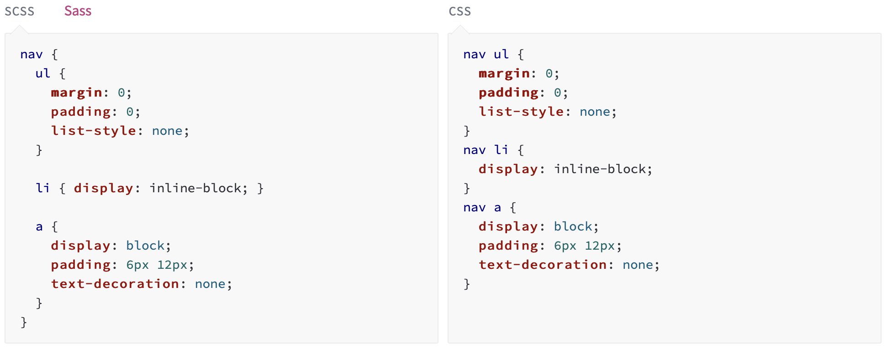
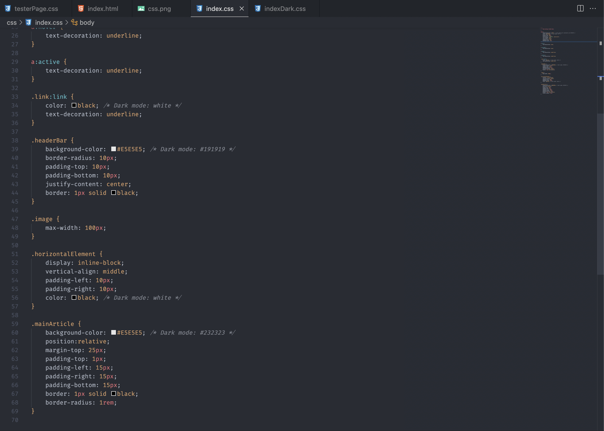
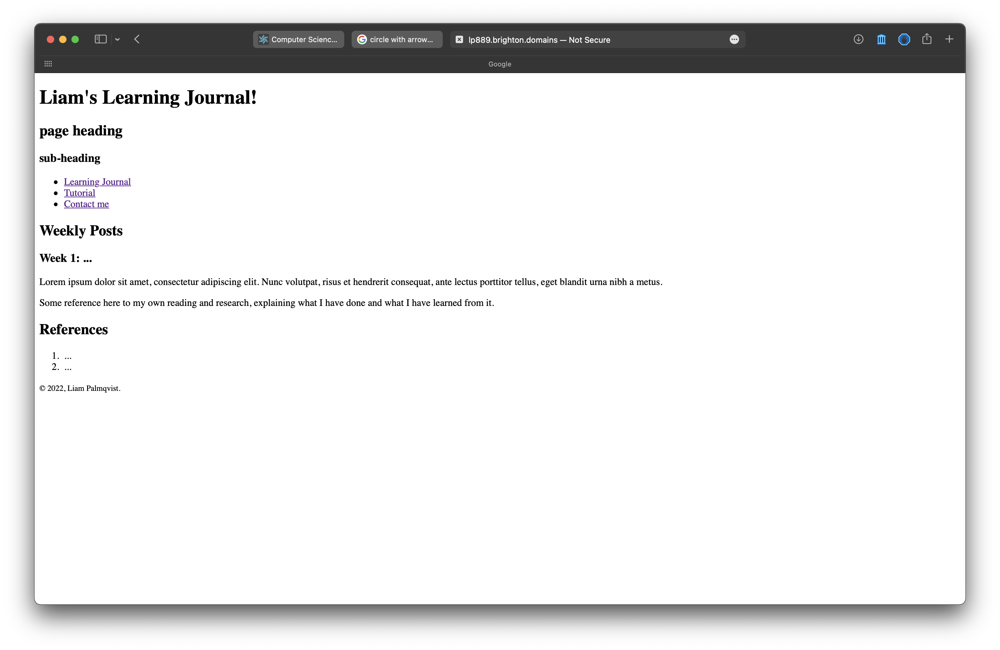

Week 10:
This week marked the final week of programming the website for my course, as far as this year goes. Next year we'll be doing some stuff on Javascript, which I'll probably make a seperate page for. In terms of what I did this week, I pretty much just finished up the programming I had to do for the Contact page and called it a day.
Week 9:
Week 9 was all about testing the site and making sure there were no errors. Because I had been keeping track of the site and debugging as I went, there wasn't a lot for me to do. This was fine though because as part of the course at Uni, I was supposed to make a form on my Contact page. This week we were also assigned a new task: Making a tutorial page for a study skill we learnt from the Sharepoint website at Brighton Uni. I chose to talk about some basic sort of things along with my experience using the services.
Week 8:
This week I added an image as a logo on the top left of my site using an absolute positioning tag along with a float tag to make the picture stay to the left and not intrude on or affect the top menu bar. The image disappears whenever the website is in mobile mode.
I also added a video of a song on YouTube. This was kinda mandetory so I added it because I had to. If you are viewing this on mobile, there won't be a video because I had issues resizing it for mobile viewing
Week 7:
This week I was able to update the website to add mobile view alongside desktop view. I also added a fancy scroll effect to automatically scroll to the part of the page that is linked when a link is clicked
Week 6:
This week I was able to somehow wrangle the funky text to center itsself in a div I provided for it. I've also discovered a new type of CSS that I might consider using called SCSS or SASS (Syntaxically Awesome StyleSheet), which uses new lines and indentation instead of colons and semi-colons to write syntax. It also allows for the use of Nesting where you can define things inside other things (poor explaination, I know)
Week 5:
Since only the stars in the text effect from last week's post are made using JS, I can utilise the CSS properties to make this text look
Week 4:
This week I was unfortunately ill, so I took a break from developing the website and instead focused on learning about cool CSS effects I could use in the future. Some of the videos I looked at include this one, which looks at using a hover effect with Javascript; along with this one, which uses CSS and JS to make a cool looking text effect.
Week 3:
During week 3 I found some good sources on html development and css. I'm now trying to make a header element for a navigation bar and some css to make things look prettier. It's a little bit later and a I've finally managed to develop the header bar a little bit more. I've also managed to resize the image I had with some more css. At this point, the website passes the html check!
Week 2:
I was able to insert a photo as an icon on the top of the page, I'm thinking of having it link to another page or maybe just back to the home page on others as a sort of "home" button.
Week 1:
Not much happened, I was able to set up the default web page and play around with the html a little bit.
